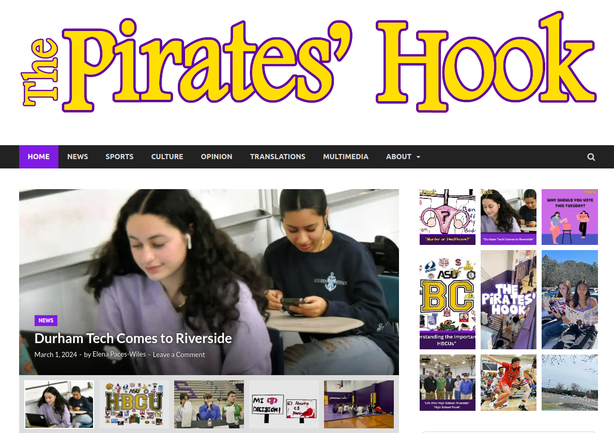
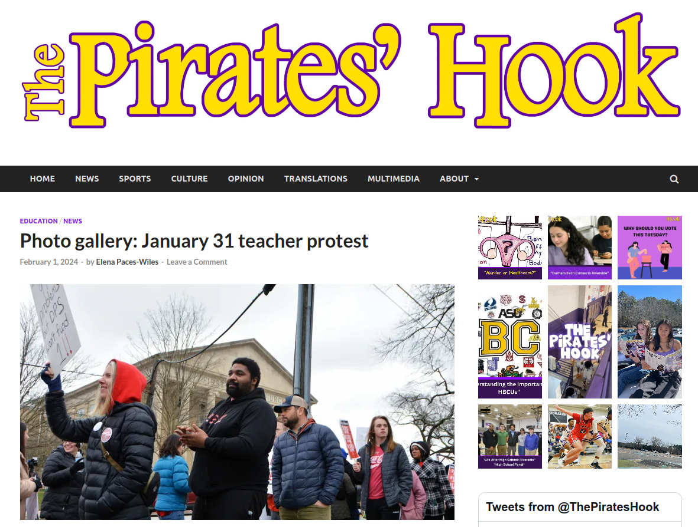
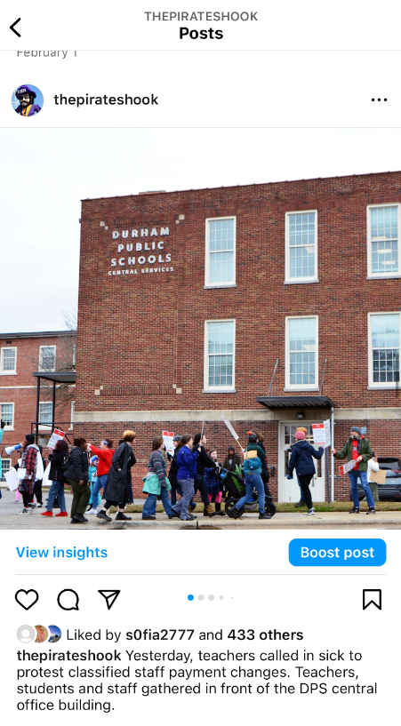
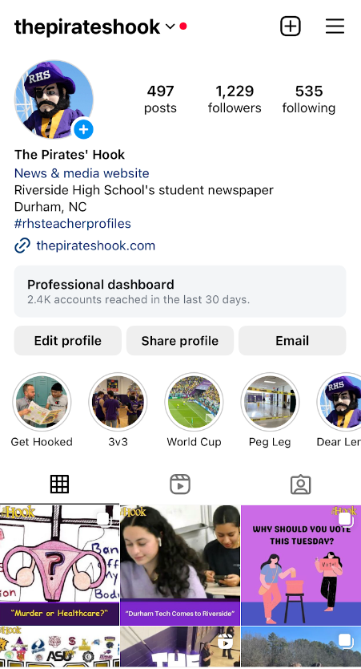
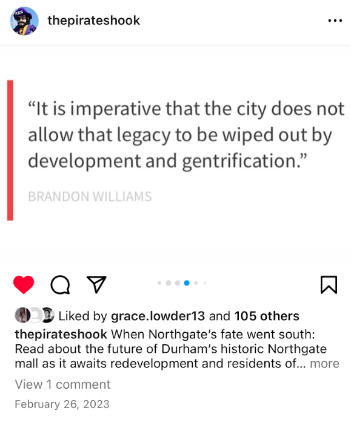

As an editor, my role includes determining not only which stories we should cover and how, but also the most engaging format to share them. While we publish a print issue about four times each year, we post daily content on the Pirates’ Hook website. This allows us to communicate in an ongoing and consistent way with the school community.

As part of our website strategy, The Hook has an editor dedicated to the online presence. I oversee all content development, and work with the online editor to ensure that stories are posted in a timely manner.
The homepage has several design features to engage readers, including a carousel highlighting stories from different sections and a sidebar showing the most recent posts. Visitors to the site can also use the menu bar to go straight to News, Culture, Sports and Opinion sections, to view multimedia or to read the Spanish version of the Hook.
In addition, the website has a searchable archive so readers can find stories based on topic, section or author from past issues as well as online-exclusive content.
Since our readers engage with visuals first, we often post photo galleries on the website I covered a teacher protest as a photo gallery, telling the story through images and photo captions.

Stories added to the website have accompanying posts on our social media platforms.

The majority of student interactions with our website begin with our Instagram account Our posts introduce the story and direct readers to our website, where they then view other stories Our Instagram has 1,229 followers.

We use the Instagram format to highlight the most important or attention-grabbing aspects of the story, such as pull quotes and images.

The Hook also often posts short time-sensitive pieces exclusively on social media, where we know students will see it For example, we posted our April Fools’ coverage as Instagram graphics